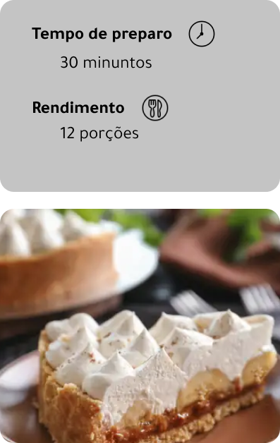

Ingredientes
- 400 gramas de doce de leite
- 10 bananas cortadas em rodelas
- 400 gramas de nata (ou chantilly)
- 200 gramas de bolacha maisena processada
- 100 gramas de manteiga sem sal
- 1 colher de canela em pó para polvilhar
Modo de preparo
- Misture a bolacha processada com a manteiga, com a ponta dos dedos, até formar uma massa lisa. Forre o fundo de uma forma de fundo falso, e asse por apenas 10 minutos, em forno preaquecido a 180°C. Retire. Deixe a massa esfriar;
- Coloque o doce de leite sobre a massa já fria. Alise para ficar plano;
- Pique as bananas em rodelas, e distribua-as sobre o doce de leite;
- Coloque a nata por cima (se preferir, pode batê-la para deixar em ponto de chantilly), e alise;
- Pegue uma peneira pequena, e espalhe a canela por cima passando-a pela peneira, para que pulverize melhor por toda a torta;
- Deixe na geladeira por 3 horas antes de desenformar.
